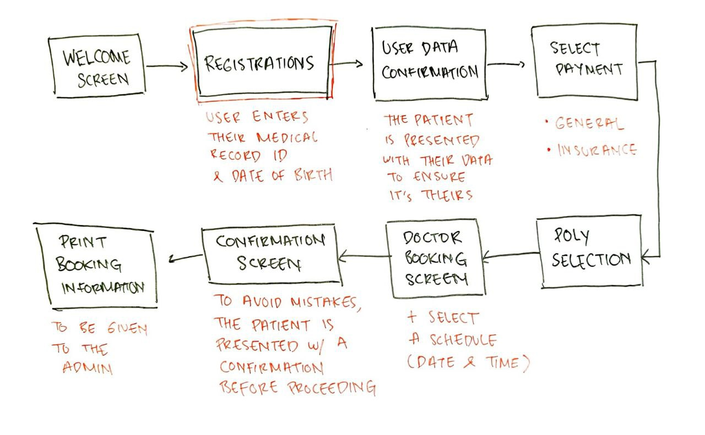

Decreasing patient registration time at hospitals by 78%

Project Summary: I helped reduce patient registration time at hospitals by 78%. I did this by redesigning the patient self-admission interface for hospitals' electronic kiosks. I used clean design, and clear terminology, and dropped unnecessary distractions.
Activities
- Field Visits & Observations
- User Interviews
- User Flow Creation, Wireframing, Prototyping
- Usability Testing
Results
- 78% decrease in patient registration time
- 131% increase in subjective satisfaction
The Problem
I conducted a field visit and several interviews with patients in hospitals. I found that they find it hard to use the self-registration kiosks provided by the hospitals.
The hospital management's main idea was to enable patients to register themselves. This was done to speed up the process of getting healthcare. But it turned out that most patients gave up using the kiosks. And decided to wait for manual registration by the admission officers.
Making Registrations Easier for the Elderly
The majority of the hospital's patients are elderly. Mostly 60 to 80-year-olds. These are folks for whom technology was not a huge part of most of their lives. So providing an automated interface is a major challenge.
They consider getting healthcare is about meeting actual people. Using any sort of technology is nothing more than an additional burden to their already bad health condition.
My Role
As the UX researcher, I collaborated with the Implementation department to get insights. We uncovered problems to set the stage for the problem-solving process.
I asked the following questions for the user research:
- How long did you wait for your appointment today?
- What was your experience when registering for your appointment?
- How satisfied were you with the time it took to register your appointment?
- Was the registration process easy to understand?
- Do you feel like your wait time was reasonable?
- How was the overall experience of visiting the hospital?
Problem Space - Raw Insights
After synthesizing the insights obtained from the interviews, it is clear that the patients and officers feel that the current registration system is daunting.
Design improvement is a critical need in ensuring patients can get healthcare efficiently.
Problem Space - Design Audit
I also conducted a design audit where I analyzed the flaws of the current design implemented on the system.
The image below contains some findings based on usability heuristics.
Hence, I've come up with design challenges I'm facing for this project:
- How might we design a friendlier UI to be used by the elderly?
- How might we reduce patient self-registration time?
- How might we communicate registration information better?
Redesigning for Hospitals at the height of a Pandemic
The iteration process has quite a few major constraints. First, because I was the only UX person working on the project. Moreover, the height of the Covid-19 pandemic in 2020 significantly limited the user research process in terms of time and budget.
So I jumped straight to the user flow creation and create wireframes to be tested. A week after I concluded my field visit, I came up with a user task flow:
Initial Iterations
I rapidly shifted between paper and digital prototyping during an interactive design process. I tested the prototypes with my fellow teammates (including a doctor as the Solution Architect). I also got feedback from the Head of Product.
After a few internal workshops, I came up with the initial wireframes that walks the users through the self-registration process. I also designed the wireframe while aligning with the rules of the Ministry of Health.
Preliminary Testing
After I finished the wireframes, I conducted some first one-to-one interviews with users. I asked them to do a series of tasks. The tasks were linear thus all five users I talked with are doing the same tasks.
Although there was a significant improvement regarding the entry point, there is still room for more improvement. And from the interviews, it was uncovered that users are already accustomed to the flow, but the information displayed is somewhat unclear.
Some notable responses I got from the patients were focused on the following:
- Unclear Instructions (UX Copy)
- Users can't figure out where they are in the registration process
Visual Style
After the team and I felt confident about the wireframe and test results, we proceed to deliver a visual design that represents our SaaS product.
We want to keep the design clean while maintaining a strong brand identity: trustworthy, accessible, and valuable.
Distraction-free Starting Point
We realized that hospitals are busy places. It's full of noise and distractions.
So we found it essential to put a dead-simple interface that leads users to what they really need, all without distracting and necessary elements that we discovered earlier.

Recognizable Icons for Poly Selection
The poly selection page is the main part of this whole redesign. We want to ensure people can get to where they need to be, as fast as possible. Furthermore, we decided to go with simpler medical terms for general use.
One example is the word Poli Kecantikan which literally translates to "Beauty Poly." We used that term instead of dermatology which can still be confusing for the majority of users we talked to.
Giving users the chance to check their booking
From our field visit, we found that oftentimes people proceed with a complicated booking system only to make a lot of administrative mistakes. This led people to longer waiting times as admission officers needed to correct the data.
This is honestly the main challenge because designing a somewhat data-heavy page after a series of simple interfaces is no easy task. We try to compress essential information into "cards" to catch the eye. And one final check for users to see if their data is without any mistakes.
Validation
Our redesign efforts were received positively by patients. I also did two usability testings to ensure the effectiveness of the new design.
- The original system: People finished their tasks with an average of 3 errors during the journey. And it took 18 minutes to finish the registration process.
- The redesign: People finished their tasks on their own. And it took only 4 minutes to finish the registration process. Nearly 78% decrease in registration time.
- Users' subjective satisfaction with the new design (4.4/5) was 131% higher than the original system (1.9/5).
User feedback:
"It's almost like a game, it was so easy and fast to fill the data needed to register."
"I can feel at ease knowing my registration is fast and it took only a few minutes to do."
Challenges and Future Improvements
The biggest challenge for this project was the Covid-19 pandemic. We can't navigate the physical aspects of the problem freely due to restrictions.
As the sole designer at that time, the task of building something so technical was daunting at the beginning. But fortunately, I was surrounded by a great team and a medical expert to help me navigate through the highly medical side of things.
One of the elements that could be included in the future would probably be a progress bar to tell users where they are during the registration process.
Even though it is a short process, it's very essential information especially when people are faced with a short time frame to save a life.